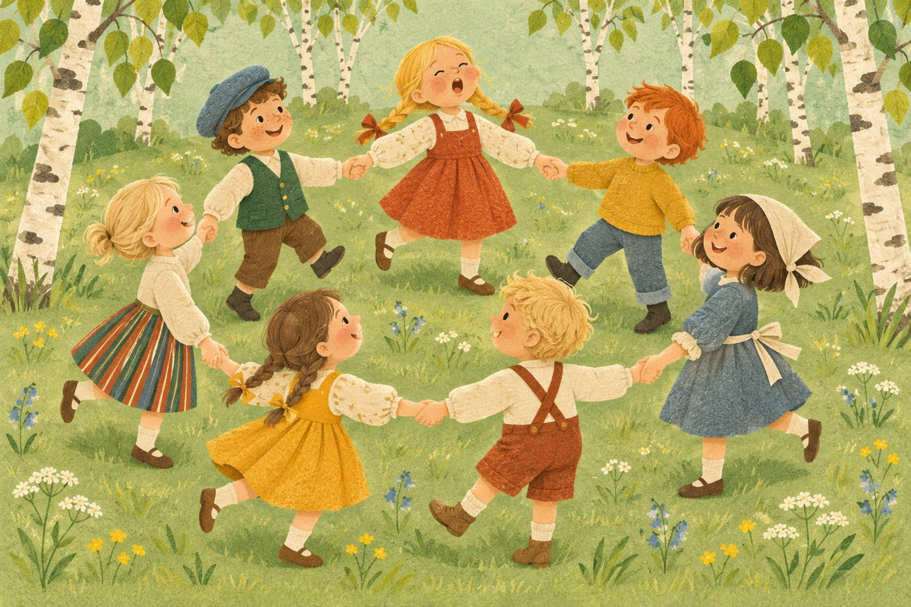

Praktiline abivahend rühmaõpetajale
Laulame ja
mängime!
Kogumikus on seitse laulumängu 3–7-aastastele lastele. Kogumik valmis magistritöö raames metoodilise materjalina, et toetada laste sotsiaal-emotsionaalseid kompetentse laulumängude kaudu.
Vali laulumäng